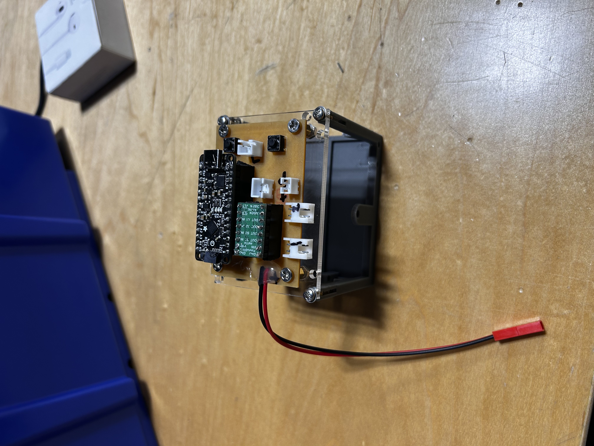
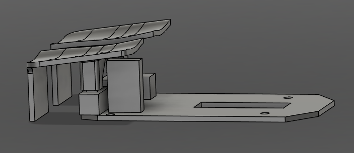
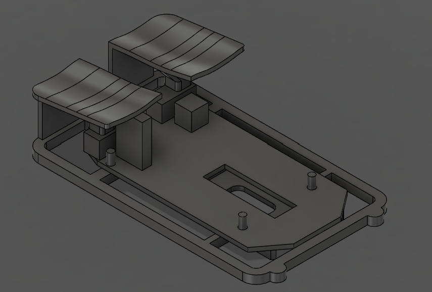

soph week 4/7 - 4/10
sumobot updates
jonas finally worked on the body, only to lose most of the progress (fun). despite this, we managed to mill the pcb and 3d print the main shell, so not much was lost. miles soldered all the components, so now we just need to test everything and do a trial run soon.
one issue is that our sensors might not get fully pressed due to the robot’s light weight. this could be problematic since the code depends on complete sensor presses - when released, they’re supposed to adjust positioning based on which sensor was activated. hopefully with the battery and the other parts, we won’t have this issue.
zerømouse updates
fixed my cad file so components are actual parts instead of meshes (not sure why i did that before).
mouse triggers
i wasn’t happy with how the mouse buttons had those little stand things that required shell modifications for a friction fit. after testing this design, i scrapped it and removed the entire bottom section of the triggers.
however, i’d already printed them and discovered the triggers couldn’t properly click the pcb buttons because the scroll wheel stand was too long and blocked them.
old triggers vs new triggers. (left side is old ones, right side is new ones)
i redesigned the triggers’ shape and attachment method (planning to print them as one piece with the shell). the new version has longer but shorter triggers to reduce overall height.
as shown above, the triggers no longer interfere with the giant rectangle thing (scroll wheel stand) and can actually click.
shell v3
kept the same design but lengthened it to fit the new trigger orientation. also enclosed the front completely instead of leaving it open. this allows printing the shell and triggers together, though i might use a different attachment method to avoid supports.
progress seems slow, but i’m happy with how it’s coming along. next steps include adding side “wings” for finger support and deciding whether to print the triggers with supports or find another attachment solution.
i might resin print the final version for better precision and finer details if i like the design enough, including a resin-printed scroll wheel to match as she scroll wheel feels a bit janky.